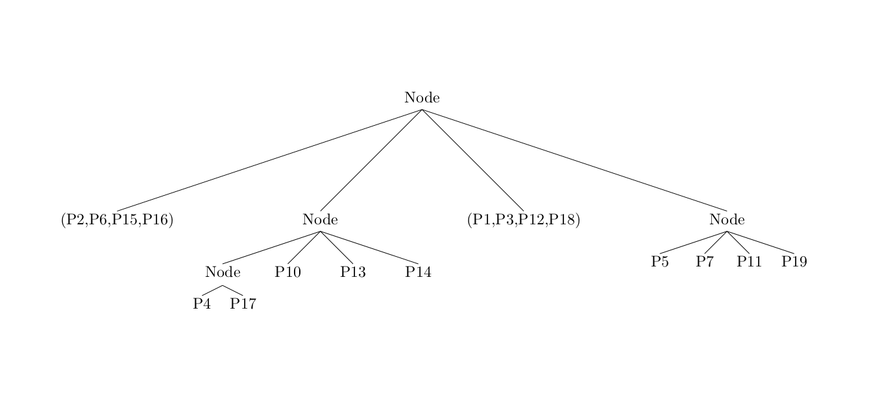
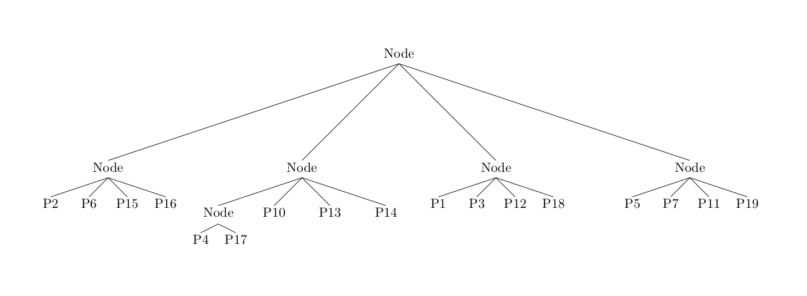

We split it into 4 spaces with 2 lines. We can see the resulting tree on the right.
3 / 17
We perform the same move recursively while some nodes are not leafs (ie contain more than one point).
4 / 17
Actual tree :
We split our sub-set of points
5 / 17
And again
6 / 17
Actual tree :
7 / 17
There are no more nodes to recurse on this sub-space.
So we return to the root and continue recursing on the others branches if necessary.
Guess how will be the tree after the parsing of green box
8 / 17
Actual tree :

Yes ! it is that !
9 / 17
Final tree :

Finally we obtain this partition tree.
10 / 17
Now let see a example of counting problem with this triangle !
11 / 17
Let focus on a subspace
12 / 17
UpLeft space has a points, we have to recurse.
We look at intersection. It intersect left line, so we have to recurse only on the downLeft spaces
because UpLeft was alrady recurse.
UpRight and DownRight are not crossed. How do we determine if the spaces are inside or outside ?
We look at the intersection of the 2 splitting lines(I1 here). If this point is inside the triangle,
the uncrossed spaces are in otherwise they are out. Take time to think about it.
13 / 17
We will recurse on space(green box).
However this space contain only 1 points, we don't have choice,
we have to compute the points to know if it is inside or ouside the triangle.
14 / 17
We focus the green box
15 / 17
You to play ! guess what algorithm will do.
16 / 17
Yes ! There is no triangle point. We look at intersections et recurse.
2 spaces are not crossed so we look at I3. It is inside the triangle.
Thus the upLeft downLeft will not be recursed and can be directly count.